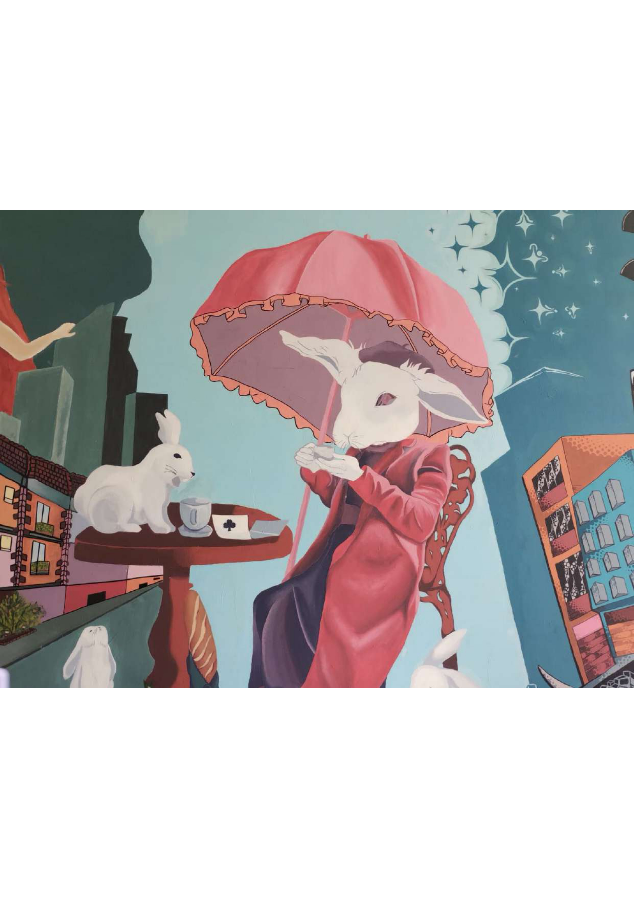
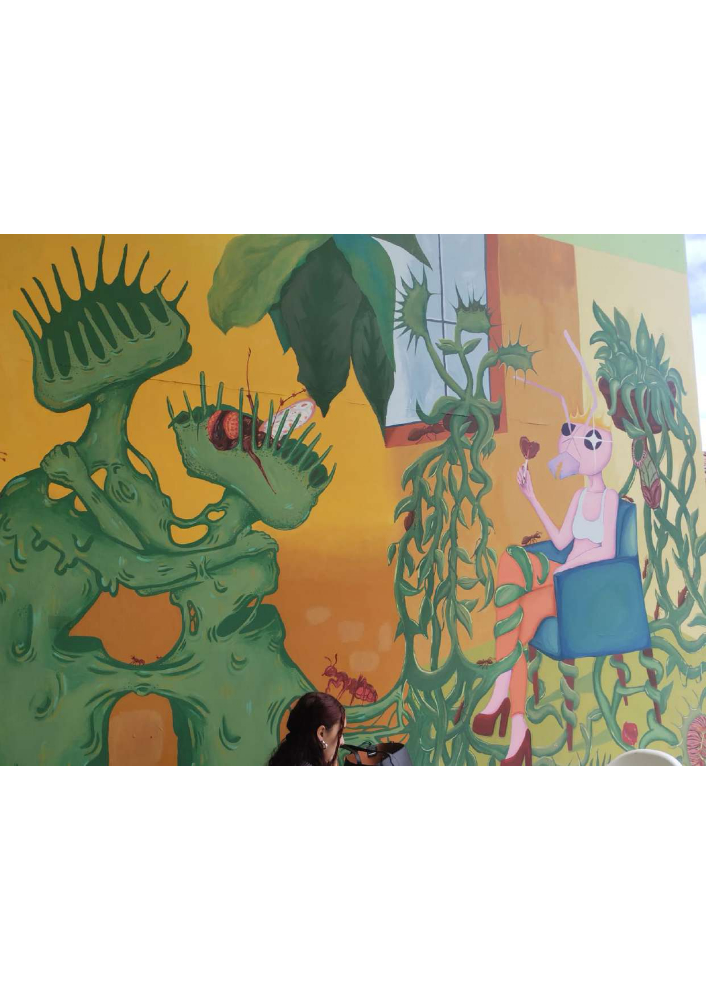
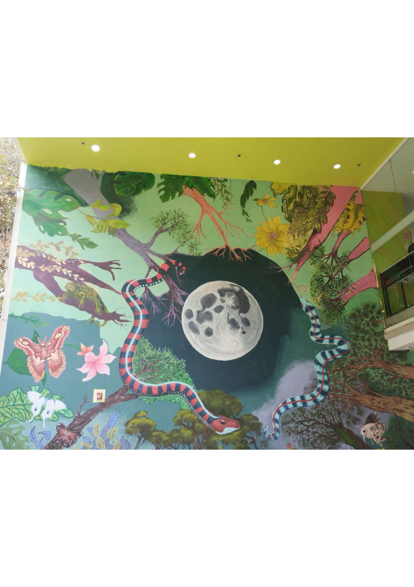
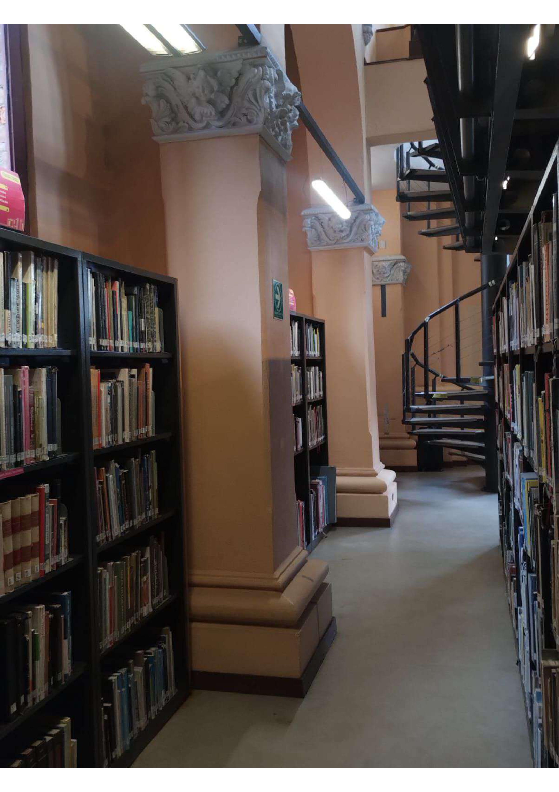

🐇
EL SUEÑO DE ALICIA
…NO SIGAS
AL CONEJO…
Alicia no recuerda cuándo comenzó el sueño.
Solo recuerda
estar caminando.

El camino
parecía conocido.

Hasta que dejó
de serlo.

¿Un conejo?
No debería estar
allí.
Aun así,
Alicia lo siguió.

Lo siguió
entre los árboles.

Cada vez más
lejos.
Cada vez más adentro.

Los animales
parecían estar despiertos.

La luna
estaba demasiado cerca.
Y las serpientes parecían conocerla.
Entonces
volvió a verlo.
Esta vez no
estaba huyendo.
La
estaba esperando.
…
Alicia quiso preguntarle adónde la llevaba.
Pero el
conejo ya había desaparecido.

Detrás había una biblioteca.
No sabía
cómo había llegado allí.
Solo
quería volver a casa.

Frente a ella una gran escalera de caracol que llevaba a una luz desconocida.
Alicia pensó
en subir.
De repente
el conejo volvió a aparecer.
Pero esta vez,
Alicia no lo siguió.
Por primera vez,
quiso regresar.
Pero ya
no recordaba el camino.
Entonces
escuchó una voz detrás de ella.
“Alicia…”